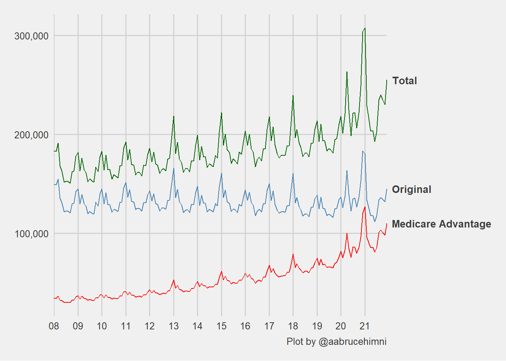
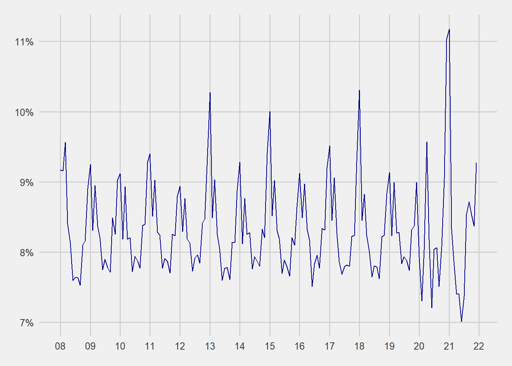
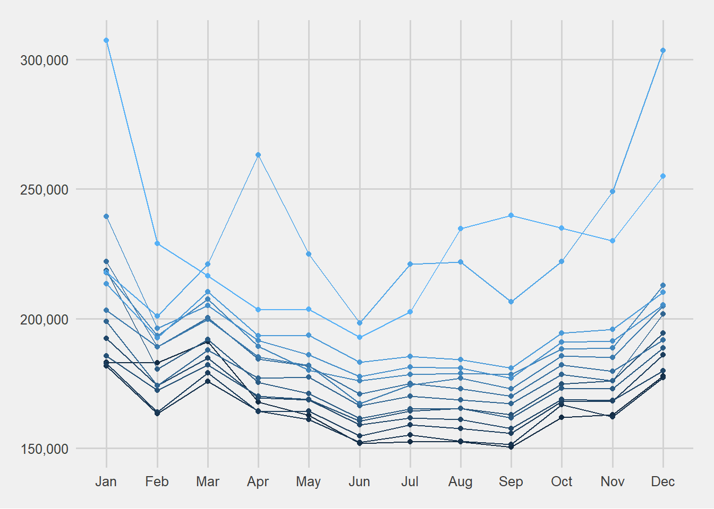

Warning: S3 method 'ggplot_add.pct_scale' was declared in NAMESPACE but not
foundMedicare Deaths
Medicare Deaths
Information on all Medicare beneficiary deaths, by type of entitlement, health care delivery, demographic characteristics, and geography.
Deaths by Month
Code
# Total Beneficiary Deaths by Month, 2008-2021
mon_tot <- mdcr_enroll_ab_33 |>
dplyr::mutate(group = "Total",
.after = year)
mon_tot# A tibble: 14 × 53
year group total total_chg total_pct_chg january january_pct january_chg
<int> <chr> <dbl> <dbl> <dbl> <dbl> <dbl> <dbl>
1 2008 Total 1998215 NA NA 183291 0.0917 NA
2 2009 Total 1964086 -34129 -0.0171 181710 0.0925 -1581
3 2010 Total 2003962 39876 0.0203 182764 0.0912 1054
4 2011 Total 2046334 42372 0.0211 192388 0.0940 9624
5 2012 Total 2077591 31257 0.0153 185736 0.0894 -6652
6 2013 Total 2126488 48897 0.0235 218498 0.103 32762
7 2014 Total 2144287 17799 0.00837 199003 0.0928 -19495
8 2015 Total 2220438 76151 0.0355 222132 0.100 23129
9 2016 Total 2226692 6254 0.00282 203187 0.0913 -18945
10 2017 Total 2290129 63437 0.0285 217850 0.0951 14663
11 2018 Total 2323160 33031 0.0144 239498 0.103 21648
12 2019 Total 2337988 14828 0.00638 213519 0.0913 -25979
13 2020 Total 2750553 412565 0.176 218061 0.0793 4542
14 2021 Total 2750141 -412 -0.000150 307319 0.112 89258
# ℹ 45 more variables: january_pct_chg <dbl>, february <dbl>,
# february_pct <dbl>, february_chg <dbl>, february_pct_chg <dbl>,
# march <dbl>, march_pct <dbl>, march_chg <dbl>, march_pct_chg <dbl>,
# april <dbl>, april_pct <dbl>, april_chg <dbl>, april_pct_chg <dbl>,
# may <dbl>, may_pct <dbl>, may_chg <dbl>, may_pct_chg <dbl>, june <dbl>,
# june_pct <dbl>, june_chg <dbl>, june_pct_chg <dbl>, july <dbl>,
# july_pct <dbl>, july_chg <dbl>, july_pct_chg <dbl>, august <dbl>, …Code
# Original Medicare Beneficiary Deaths by Month, 2008-2021
mon_orig <- mdcr_enroll_ab_36 |>
dplyr::mutate(group = "Original",
.after = year)
mon_orig# A tibble: 14 × 53
year group total total_chg total_pct_chg january january_pct january_chg
<int> <chr> <dbl> <dbl> <dbl> <dbl> <dbl> <dbl>
1 2008 Original 1.61e6 NA NA 149153 0.0927 NA
2 2009 Original 1.55e6 -57216 -0.0356 144681 0.0933 -4472
3 2010 Original 1.57e6 21367 0.0138 144927 0.0922 246
4 2011 Original 1.59e6 19980 0.0127 151447 0.0951 6520
5 2012 Original 1.59e6 -5063 -0.00318 142922 0.0900 -8525
6 2013 Original 1.59e6 7369 0.00464 165747 0.104 22825
7 2014 Original 1.57e6 -25436 -0.0159 147485 0.0940 -18262
8 2015 Original 1.59e6 16925 0.0108 160662 0.101 13177
9 2016 Original 1.57e6 -19672 -0.0124 143510 0.0916 -17152
10 2017 Original 1.56e6 -2605 -0.00166 150051 0.0959 6541
11 2018 Original 1.54e6 -25936 -0.0166 160276 0.104 10225
12 2019 Original 1.51e6 -32984 -0.0214 138504 0.0920 -21772
13 2020 Original 1.70e6 190158 0.126 136332 0.0804 -2172
14 2021 Original 1.59e6 -109436 -0.0646 180346 0.114 44014
# ℹ 45 more variables: january_pct_chg <dbl>, february <dbl>,
# february_pct <dbl>, february_chg <dbl>, february_pct_chg <dbl>,
# march <dbl>, march_pct <dbl>, march_chg <dbl>, march_pct_chg <dbl>,
# april <dbl>, april_pct <dbl>, april_chg <dbl>, april_pct_chg <dbl>,
# may <dbl>, may_pct <dbl>, may_chg <dbl>, may_pct_chg <dbl>, june <dbl>,
# june_pct <dbl>, june_chg <dbl>, june_pct_chg <dbl>, july <dbl>,
# july_pct <dbl>, july_chg <dbl>, july_pct_chg <dbl>, august <dbl>, …Code
# Medicare Advantage and Other Health Plan Beneficiary Deaths by Month, 2008-2021
mon_ma <- mdcr_enroll_ab_38 |>
dplyr::mutate(group = "Medicare Advantage",
.after = year)
mon_ma# A tibble: 14 × 53
year group total total_chg total_pct_chg january january_pct january_chg
<int> <chr> <dbl> <dbl> <dbl> <dbl> <dbl> <dbl>
1 2008 Medicar… 3.90e5 NA NA 34138 0.0876 NA
2 2009 Medicar… 4.13e5 23087 0.0592 37029 0.0897 2891
3 2010 Medicar… 4.31e5 18509 0.0448 37837 0.0877 808
4 2011 Medicar… 4.54e5 22392 0.0519 40941 0.0902 3104
5 2012 Medicar… 4.90e5 36320 0.0800 42814 0.0874 1873
6 2013 Medicar… 5.32e5 41528 0.0847 52751 0.0992 9937
7 2014 Medicar… 5.75e5 43235 0.0813 51518 0.0896 -1233
8 2015 Medicar… 6.34e5 59226 0.103 61470 0.0969 9952
9 2016 Medicar… 6.60e5 25926 0.0409 59677 0.0904 -1793
10 2017 Medicar… 7.26e5 66042 0.100 67799 0.0934 8122
11 2018 Medicar… 7.85e5 58967 0.0812 79222 0.101 11423
12 2019 Medicar… 8.33e5 47812 0.0609 75015 0.0901 -4207
13 2020 Medicar… 1.06e6 222407 0.267 81729 0.0774 6714
14 2021 Medicar… 1.16e6 109024 0.103 126973 0.109 45244
# ℹ 45 more variables: january_pct_chg <dbl>, february <dbl>,
# february_pct <dbl>, february_chg <dbl>, february_pct_chg <dbl>,
# march <dbl>, march_pct <dbl>, march_chg <dbl>, march_pct_chg <dbl>,
# april <dbl>, april_pct <dbl>, april_chg <dbl>, april_pct_chg <dbl>,
# may <dbl>, may_pct <dbl>, may_chg <dbl>, may_pct_chg <dbl>, june <dbl>,
# june_pct <dbl>, june_chg <dbl>, june_pct_chg <dbl>, july <dbl>,
# july_pct <dbl>, july_chg <dbl>, july_pct_chg <dbl>, august <dbl>, …Code
# ALL Deaths by Month, 2008-2021
deaths_by_month <- dplyr::full_join(mon_tot, mon_orig) |>
dplyr::full_join(mon_ma)Joining with `by = join_by(year, group, total, total_chg, total_pct_chg,
january, january_pct, january_chg, january_pct_chg, february, february_pct,
february_chg, february_pct_chg, march, march_pct, march_chg, march_pct_chg,
april, april_pct, april_chg, april_pct_chg, may, may_pct, may_chg, may_pct_chg,
june, june_pct, june_chg, june_pct_chg, july, july_pct, july_chg, july_pct_chg,
august, august_pct, august_chg, august_pct_chg, september, september_pct,
september_chg, september_pct_chg, october, october_pct, october_chg,
october_pct_chg, november, november_pct, november_chg, november_pct_chg,
december, december_pct, december_chg, december_pct_chg)`
Joining with `by = join_by(year, group, total, total_chg, total_pct_chg,
january, january_pct, january_chg, january_pct_chg, february, february_pct,
february_chg, february_pct_chg, march, march_pct, march_chg, march_pct_chg,
april, april_pct, april_chg, april_pct_chg, may, may_pct, may_chg, may_pct_chg,
june, june_pct, june_chg, june_pct_chg, july, july_pct, july_chg, july_pct_chg,
august, august_pct, august_chg, august_pct_chg, september, september_pct,
september_chg, september_pct_chg, october, october_pct, october_chg,
october_pct_chg, november, november_pct, november_chg, november_pct_chg,
december, december_pct, december_chg, december_pct_chg)`Code
deaths_by_month# A tibble: 42 × 53
year group total total_chg total_pct_chg january january_pct january_chg
<int> <chr> <dbl> <dbl> <dbl> <dbl> <dbl> <dbl>
1 2008 Total 1998215 NA NA 183291 0.0917 NA
2 2009 Total 1964086 -34129 -0.0171 181710 0.0925 -1581
3 2010 Total 2003962 39876 0.0203 182764 0.0912 1054
4 2011 Total 2046334 42372 0.0211 192388 0.0940 9624
5 2012 Total 2077591 31257 0.0153 185736 0.0894 -6652
6 2013 Total 2126488 48897 0.0235 218498 0.103 32762
7 2014 Total 2144287 17799 0.00837 199003 0.0928 -19495
8 2015 Total 2220438 76151 0.0355 222132 0.100 23129
9 2016 Total 2226692 6254 0.00282 203187 0.0913 -18945
10 2017 Total 2290129 63437 0.0285 217850 0.0951 14663
# ℹ 32 more rows
# ℹ 45 more variables: january_pct_chg <dbl>, february <dbl>,
# february_pct <dbl>, february_chg <dbl>, february_pct_chg <dbl>,
# march <dbl>, march_pct <dbl>, march_chg <dbl>, march_pct_chg <dbl>,
# april <dbl>, april_pct <dbl>, april_chg <dbl>, april_pct_chg <dbl>,
# may <dbl>, may_pct <dbl>, may_chg <dbl>, may_pct_chg <dbl>, june <dbl>,
# june_pct <dbl>, june_chg <dbl>, june_pct_chg <dbl>, july <dbl>, …Code
deaths_by_month_pct <- deaths_by_month |>
dplyr::select(year,
group,
dplyr::contains("pct"),
-dplyr::contains("chg")) |>
tidyr::pivot_longer(cols = dplyr::contains("pct"),
names_to = "month",
values_to = "deaths_pct") |>
dplyr::mutate(month = stringr::str_remove(month, "_pct"),
month = stringr::str_to_title(month),
month = factor(month, levels = month.name),
date = clock::as_date(clock::year_month_day(year, as.integer(month), 1)),
mon = lubridate::month(date, label = TRUE, abbr = TRUE)) |>
dplyr::select(date, month, mon, year, group, deaths_pct)
deaths_by_month_pct# A tibble: 504 × 6
date month mon year group deaths_pct
<date> <fct> <ord> <int> <chr> <dbl>
1 2008-01-01 January Jan 2008 Total 0.0917
2 2008-02-01 February Feb 2008 Total 0.0916
3 2008-03-01 March Mar 2008 Total 0.0956
4 2008-04-01 April Apr 2008 Total 0.0840
5 2008-05-01 May May 2008 Total 0.0814
6 2008-06-01 June Jun 2008 Total 0.0760
7 2008-07-01 July Jul 2008 Total 0.0763
8 2008-08-01 August Aug 2008 Total 0.0763
9 2008-09-01 September Sep 2008 Total 0.0753
10 2008-10-01 October Oct 2008 Total 0.0810
# ℹ 494 more rowsCode
deaths_by_month_n <- deaths_by_month |>
dplyr::select(year,
group,
dplyr::any_of(tolower(month.name))) |>
tidyr::pivot_longer(cols = dplyr::any_of(tolower(month.name)),
names_to = "month",
values_to = "deaths") |>
dplyr::mutate(month = stringr::str_to_title(month),
month = factor(month, levels = month.name),
date = clock::as_date(clock::year_month_day(year, as.integer(month), 1)),
mon = lubridate::month(date, label = TRUE, abbr = TRUE)) |>
dplyr::select(date, month, mon, year, group, deaths)
deaths_by_month_n# A tibble: 504 × 6
date month mon year group deaths
<date> <fct> <ord> <int> <chr> <dbl>
1 2008-01-01 January Jan 2008 Total 183291
2 2008-02-01 February Feb 2008 Total 182939
3 2008-03-01 March Mar 2008 Total 191125
4 2008-04-01 April Apr 2008 Total 167865
5 2008-05-01 May May 2008 Total 162702
6 2008-06-01 June Jun 2008 Total 151849
7 2008-07-01 July Jul 2008 Total 152562
8 2008-08-01 August Aug 2008 Total 152562
9 2008-09-01 September Sep 2008 Total 150384
10 2008-10-01 October Oct 2008 Total 161946
# ℹ 494 more rowsCode
deaths_by_month_n |>
ggplot2::ggplot(aes(x = date)) +
geom_line(aes(y = deaths, color = group, linetype = group), linewidth = 0.5) +
scale_fill_manual(name = "", values = c("red","steelblue", "darkgreen")) +
scale_color_manual(name = "", values = c("red","steelblue", "darkgreen")) +
scale_linetype_manual(name = "", values = c(1, 1, 1))+
scalesextra::scale_y_pretty() +
labs(x = NULL, y = NULL) +
theme(legend.position = "bottom")
Code
deaths_by_month_pct |>
dplyr::filter(group == "Total") |>
ggplot2::ggplot(aes(x = date)) +
geom_line(aes(y = deaths_pct
#color = group,
#linetype = group
), linewidth = 0.5) +
scale_fill_manual(name = "", values = c("red","steelblue", "darkgreen")) +
scale_color_manual(name = "", values = c("red","steelblue", "darkgreen")) +
scale_linetype_manual(name = "", values = c(1, 1, 1))+
scalesextra::scale_y_pct() +
labs(x = NULL, y = NULL) +
theme(legend.position = "bottom")
Code
deaths_by_month_n |>
dplyr::filter(group == "Total", year < 2022) |>
ggplot2::ggplot(aes(x = mon)) +
geom_point(aes(y = deaths, color = year, fill = year)) +
geom_line(aes(y = deaths, group = year, color = year), linewidth = 0.5) +
scalesextra::scale_y_pretty2() +
labs(x = NULL, y = NULL) +
theme(legend.position = "bottom")
Code
deaths_by_month_pct |>
dplyr::filter(group == "Total", year < 2022) |>
ggplot2::ggplot(aes(x = mon)) +
geom_point(aes(y = deaths_pct, color = year, fill = year > 2018, shape = year > 2018), size = 2.5) +
geom_line(aes(y = deaths_pct, group = year, color = year, linetype = year > 2018), linewidth = 0.5) +
scalesextra::scale_y_pct() +
labs(x = NULL, y = NULL) +
theme(legend.position = "bottom")Deaths by Residence
Total Beneficiary Deaths by Area of Residence, 2013-2021
Code
mdcr_enroll_ab_35# A tibble: 540 × 6
year group area_of_residence total aged disabled
<int> <chr> <chr> <dbl> <dbl> <dbl>
1 2013 All All Areas 2126488 1929475 197013
2 2013 National United States 2087731 1893352 194379
3 2013 State Alabama 39755 34486 5269
4 2013 State Alaska 2599 2267 332
5 2013 State Arizona 39360 35851 3509
6 2013 State Arkansas 24639 21524 3115
7 2013 State California 197546 182475 15071
8 2013 State Colorado 26098 23904 2194
9 2013 State Connecticut 24860 23192 1668
10 2013 State Delaware 6312 5658 654
# ℹ 530 more rowsOriginal Medicare Beneficiary Deaths by Area of Residence, 2013-2021
Code
mdcr_enroll_ab_37# A tibble: 513 × 6
year group area_of_residence total aged disabled
<int> <chr> <chr> <dbl> <dbl> <dbl>
1 2013 All All Areas 1594827 1435744 159083
2 2013 National United States 1572213 1414382 157831
3 2013 State Alabama 31955 27991 3964
4 2013 State Alaska 2569 0 0
5 2013 State Arizona 23823 21787 2036
6 2013 State Arkansas 21078 18577 2501
7 2013 State California 125596 113681 11915
8 2013 State Colorado 16965 15307 1658
9 2013 State Connecticut 20369 18919 1450
10 2013 State Delaware 5827 5212 615
# ℹ 503 more rowsMedicare Advantage and Other Health Plan Beneficiary Deaths by Area of Residence, 2013-2021
Code
mdcr_enroll_ab_39# A tibble: 513 × 6
year group area_of_residence total aged disabled
<int> <chr> <chr> <dbl> <dbl> <dbl>
1 2013 All All Areas 531661 493731 37930
2 2013 National United States 515518 478970 36548
3 2013 State Alabama 7800 6495 1305
4 2013 State Alaska 30 0 0
5 2013 State Arizona 15537 14064 1473
6 2013 State Arkansas 3561 2947 614
7 2013 State California 71950 68794 3156
8 2013 State Colorado 9133 8597 536
9 2013 State Connecticut 4491 4273 218
10 2013 State Delaware 485 446 39
# ℹ 503 more rowsDeath Demographics
Total Beneficiary Deaths Demographics, 2013-2021
Code
mdcr_enroll_ab_34# A tibble: 198 × 6
year group subgroup total original ma_other
<int> <chr> <chr> <dbl> <dbl> <dbl>
1 2013 Total Total 2126488 1594827 531661
2 2013 Age Simple Under 65 197013 159083 37930
3 2013 Age Simple 65 and Over 1929475 1435744 493731
4 2013 Age Detailed Under 18 24 24 0
5 2013 Age Detailed 18-24 690 641 49
6 2013 Age Detailed 25-34 5052 4541 511
7 2013 Age Detailed 35-44 14276 12218 2058
8 2013 Age Detailed 45-54 50225 41606 8619
9 2013 Age Detailed 55-64 126746 100053 26693
10 2013 Age Detailed 65-74 454912 334073 120839
# ℹ 188 more rows